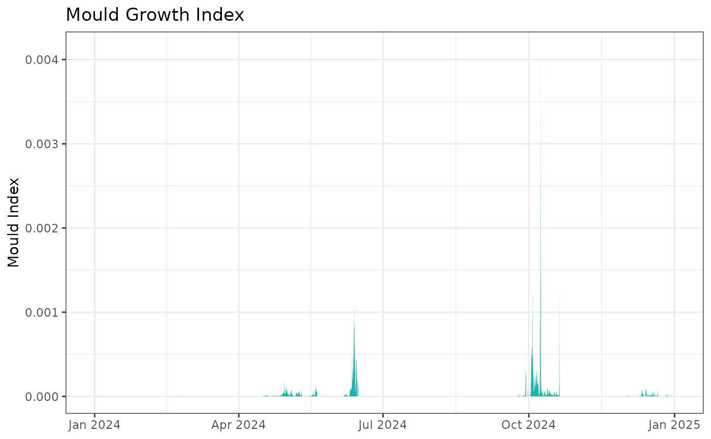

Introduction
ConSciR is an R package that provides data science tools
for conservation science. It is designed to support conservators,
scientists, and engineers by streamlining common calculations and tasks
encountered in heritage conservation workflows.
Install and load
install.packages("ConSciR")
library(ConSciR)You can install the development version of the package from GitHub
using the pak package:
install.packages("pak")
pak::pak("BhavShah01/ConSciR")
# Alternatively
# install.packages("devtools")
# devtools::install_github("BhavShah01/ConSciR")Visit the package GitHub page for updates and source code: ConSciR Github
This vignette provides a practical introduction to the package’s
functionalities. For full details on all functions, see the package Reference
manual or use ?function_name within R.
Examples
Load the necessary packages:
Add calculated values
Enrich your dataset with environmental metrics computed by ConSciR functions:
filepath <- data_file_path("mydata.xlsx")
mydata <- readxl::read_excel(filepath, sheet = "mydata")
mydata <- mydata |> filter(Sensor == "Room 1")
# Add calculated values using mutate
head(mydata) |>
mutate(
# Humidity functions
Absolute_Humidity = calcAH(Temp, RH),
Dew_Point = calcDP(Temp, RH),
Mixing_Ratio = calcMR(Temp, RH),
Humidity_Ratio = calcHR(Temp, RH),
Enthalpy = calcEnthalpy(Temp, RH),
Saturation_Vapour_Pressure = calcPws(Temp),
Actual_Vapour_Pressure = calcPw(Temp, RH),
Air_Density = calcAD(Temp, RH),
Temp_calc = calcTemp(RH, Dew_Point),
RH_AH_calc = calcRH_AH(Temp, Absolute_Humidity),
RH_DP_calc = calcRH_DP(Temp, Dew_Point),
# Conservation functions
Mould_Growth = calcMould_Zeng(Temp, RH, label = TRUE),
Mould_Growth_Limit = calcMould_Zeng(Temp, RH),
Mould_Growth_Index = calcMould_VTT(Temp, RH),
Lifetime = calcLM(Temp, RH),
Preservation_Index = calcPI(Temp, RH),
EMC_Wood = calcEMC_wood(Temp, RH)
) |>
glimpse()
#> Rows: 6
#> Columns: 22
#> $ Site <chr> "London", "London", "London", "London", "Lo…
#> $ Sensor <chr> "Room 1", "Room 1", "Room 1", "Room 1", "Ro…
#> $ Date <dttm> 2024-01-01 00:00:00, 2024-01-01 00:15:00, …
#> $ Temp <dbl> 21.8, 21.8, 21.8, 21.7, 21.7, 21.7
#> $ RH <dbl> 36.8, 36.7, 36.6, 36.6, 36.5, 36.2
#> $ Absolute_Humidity <dbl> 7.052415, 7.033251, 7.014087, 6.973723, 6.9…
#> $ Dew_Point <dbl> 6.383970, 6.344456, 6.304848, 6.216205, 6.1…
#> $ Mixing_Ratio <dbl> 5.957278, 5.940935, 5.924593, 5.888156, 5.8…
#> $ Humidity_Ratio <dbl> 5.957278, 5.940935, 5.924593, 5.888156, 5.8…
#> $ Enthalpy <dbl> 37.15665, 37.11512, 37.07359, 36.87888, 36.…
#> $ Saturation_Vapour_Pressure <dbl> 26.12119, 26.12119, 26.12119, 25.96205, 25.…
#> $ Actual_Vapour_Pressure <dbl> 9.612598, 9.586477, 9.560356, 9.502110, 9.4…
#> $ Air_Density <dbl> 1.192445, 1.192457, 1.192469, 1.192899, 1.1…
#> $ Temp_calc <dbl> 21.8, 21.8, 21.8, 21.7, 21.7, 21.7
#> $ RH_AH_calc <dbl> 36.8, 36.7, 36.6, 36.6, 36.5, 36.2
#> $ RH_DP_calc <dbl> 36.8, 36.7, 36.6, 36.6, 36.5, 36.2
#> $ Mould_Growth <dbl> 0, 0, 0, 0, 0, 0
#> $ Mould_Growth_Limit <dbl> 75.11542, 75.11542, 75.11542, 75.14014, 75.…
#> $ Mould_Growth_Index <dbl> 0, 0, 0, 0, 0, 0
#> $ Lifetime <dbl> 1.107855, 1.108860, 1.109869, 1.109854, 1.1…
#> $ Preservation_Index <dbl> 45.25849, 45.38181, 45.50580, 46.07769, 46.…
#> $ EMC_Wood <dbl> 7.201471, 7.186361, 7.171247, 7.173308, 7.1…
head(mydata) |>
add_time_vars() |>
add_humidity_calcs() |>
add_conservation_calcs() |>
add_humidity_adjustments()
#> # A tibble: 6 × 62
#> Site Sensor date Temp RH seasonyear season monthyear
#> <chr> <chr> <dttm> <dbl> <dbl> <ord> <ord> <ord>
#> 1 London Room 1 2024-01-01 00:00:00 21.8 36.8 winter (DJF) -… winte… January …
#> 2 London Room 1 2024-01-01 00:15:00 21.8 36.7 winter (DJF) -… winte… January …
#> 3 London Room 1 2024-01-01 00:29:59 21.8 36.6 winter (DJF) -… winte… January …
#> 4 London Room 1 2024-01-01 00:44:59 21.7 36.6 winter (DJF) -… winte… January …
#> 5 London Room 1 2024-01-01 00:59:59 21.7 36.5 winter (DJF) -… winte… January …
#> 6 London Room 1 2024-01-01 01:14:59 21.7 36.2 winter (DJF) -… winte… January …
#> # ℹ 54 more variables: daylight <fct>, day <dttm>, hour <int>, dayhour <dttm>,
#> # daymonth <int>, month <ord>, year <dbl>, DayYear <date>, Season <chr>,
#> # Period <chr>, Pws <dbl>, Pw <dbl>, DP <dbl>, AH <dbl>, AD <dbl>, MR <dbl>,
#> # SH <dbl>, FP <dbl>, Enthalpy <dbl>, Mould_LIM <dbl>, Mould_rate <dbl>,
#> # Mould_index <dbl>, PreservationIndex <dbl>, Lifetime <dbl>, EMC_wood <dbl>,
#> # TRH_within <lgl>, T_lower <lgl>, T_higher <lgl>, RH_lower <lgl>,
#> # RH_higher <lgl>, zone <chr>, TRH_zone <chr>, T_zone <chr>, RH_zone <chr>, …Visualise and explore data
Combine calculations and plotting to explore patterns visually:
mydata |>
# Calculate Absolute Humidity and Dew Point
mutate(
AbsHum = calcAH(Temp, RH),
DewPoint = calcDP(Temp, RH)
) |>
# Create base plot using graph_TRH function
graph_TRH() +
# Add Absolute Humidity line
geom_line(aes(Date, AbsHum), color = "cyan4", alpha = 0.7) +
# Add Dew Point line
geom_line(aes(Date, DewPoint), color = "mediumvioletred", alpha = 0.7) +
# Apply a theme
theme_minimal()
-
Conservator tools: mould growth index
Calculate mould growth index usingcalcMould_VTT()and visualise it alongside humidity data.
mydata |>
mutate(Mould = calcMould_VTT(Temp, RH)) |>
ggplot() +
geom_area(aes(Date, Mould), fill = "darkgreen", alpha = 0.5) +
labs(title = "Mould Growth Index", y = "Mould Index", x = NULL) +
theme_bw()
Psychrometric Chart
Create psychrometric charts from temperature and humidity data. The functions from the package can be used to change the calculations used.
head(mydata, 100) |>
graph_psychrometric(
LowT = 12,
HighT = 28,
LowRH = 40,
HighRH = 70,
data_alpha = 0.3,
y_func = calcAH
) +
theme_classic()